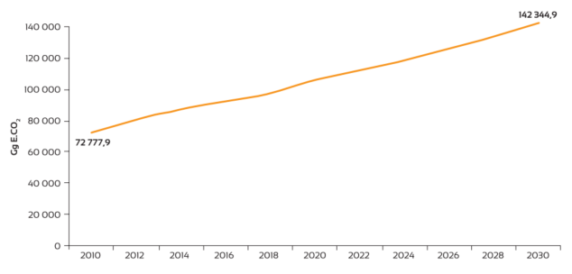
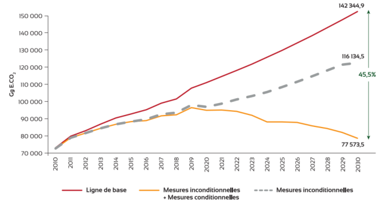
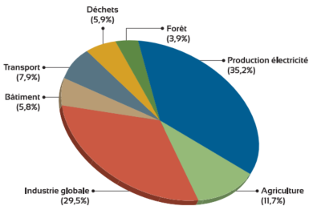
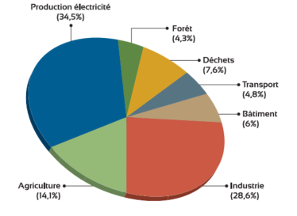

CDN-MAROC
Juin 2021
| ADA | Agence pour le Développement Agricole |
| CCNUCC | Convention-cadre des Nations Unies sur les changements climatiques |
| CMA | Conférence des Parties agissant comme réunion des Parties à l’Accord de Paris |
| CNA | Cours normal des affaires |
| CCDB | Commission Nationale du Changement Climatique et de la Diversité Biologique |
| CP | Conférence des Parties |
| FVC | Fond Vert pour le Climat |
| GES | Gaz à effet de serre |
| GIEC | Groupe intergouvernemental des experts sur le climat |
| HFC | Hydrofluorocarbures |
| MDP | Mécanisme pour un Développement Propre |
| MRV | Suivi, notification et vérification |
| NMPE | Normes minimales de performance énergétique |
| ODD | Objectifs de développement durable |
| PCN | Plan Climat National |
| PCT | Plans Climat Territoriaux |
| PIB | Produit intérieur brut |
| PMH | Petite et moyenne hydraulique |
| PMI | Partenariat pour la mise en œuvre du marché |
| PNAM | Programme d’Assainissement Liquide mutualisé |
| PNUD | Programme des Nations unies pour le développement |
| PRG | Potentiel de réchauffement global |
| RBT | Rapports Biennaux de Transparence |
| SNDD | Stratégie Nationale de Développement Durable |
| STEP | Stations de traitement des eaux usées |
Le Gouvernement du Maroc présente ici une actualisation de sa contribution déterminée au niveau national pour la période 2020-2030, conformément aux articles 4.2 et 4.11 de l’Accord de Paris, aux paragraphes 23 et 24 de la décision 1/CP.21 et aux autres dispositions pertinentes de l’Accord.
En matière d’atténuation, la CDN actualisée revoit à la hausse les objectifs de la première version de la CDN en présentant un objectif de 45,5 % à l’horizon 2030 dont un objectif inconditionnel de 18,3%. Ces nouveaux objectifs, traduisent une augmentation significative de l’ambition du Maroc en matière d’atténuation. La CDN actualisée du Maroc est multidimensionnelle et ancrée dans une variété d’éléments porteurs, tels que :
Malgré sa faible contribution dans les émissions globales des GES, le Maroc a élaboré sa CDN avec la firme conviction que les ambitions mondiales pour s’attaquer au problème du changement climatique appellent à un engagement conséquent de toutes les parties tant en matière d’atténuation, d’adaptation que de moyens de mise en œuvre, d’approches de coopération et de transparence.
Le Maroc, en restant fermement attaché à l’Accord de Paris, est déterminé à poursuivre les objectifs d’atténuation et d’adaptation au climat en fonction de ses circonstances nationales et de ses capacités.
Vision du Maroc en matière de changement climatique
Rendre son territoire et sa civilisation plus résilients face au changement climatique tout en assurant une transition rapide vers une économie sobre en carbone.
La vision du Maroc en matière de changement climatique est ancrée dans la Loi-cadre 99-12 portant Charte Nationale de l’Environnement et du Développement Durable (CNEDD) publiée dans le bulletin officiel le 21 mars 2014 et qui précise « les droits et devoirs inhérents à l’environnement et au développement durable reconnus aux personnes physiques et morales et proclame les principes qui devront être respectés par l’État, les collectivités territoriales et les établissements et entreprises publics ».
Cette volonté politique est aussi confirmée par la Stratégie nationale du développement durable (SNDD-2030) et le Plan Climat National (PCN 2030) :
La conception du PCN 30 est le fruit d’un diagnostic détaillé de la vulnérabilité des écosystèmes marocains ainsi qu’une analyse approfondie des plans et politiques sectoriels. Il englobe des mesures et projets d’adaptation des écosystèmes et secteurs clés du Maroc notamment en matière de ressources en eau, d’agriculture, de ressources halieutiques et des écosystèmes fragiles. Il se propose également de consolider les objectifs d’atténuation de toutes les stratégies et tous les plans d’action sectoriels, touchant notamment les domaines de l’énergie, l’agriculture, du transport, des déchets, des forêts, de l’industrie et de l’habitat. Il prend en considération la vocation territoriale en prônant la généralisation des Plans Climats Régionaux (PCR) et les Plans Climat des Villes (PCV).
L’adaptation est une priorité pour le Maroc, étant donné sa grande vulnérabilité aux impacts du changement climatique. Le coût pour mettre en œuvre des programmes d’adaptation dans les secteurs les plus affectés est estimé à près de 40 milliards de dollars américains. Les secteurs concernés sont notamment l’eau, l’agriculture, la pêche et l’aquaculture, la foresterie, la santé, l’habitat ainsi que les milieux et écosystèmes les plus vulnérables : oasis, littoral et montagnes.
L’objectif actualisé global du Maroc représente une réduction des émissions de GES de son économie de 45,5% à l’horizon 2030 dont un objectif inconditionnel de 18,3% par rapport au scénario de référence, qui correspond à une évolution des émissions suivant le « cours normal des affaires » (CNA). Le scénario d’atténuation menant à l’objectif global repose sur 34 mesures inconditionnelles et 27 mesures conditionnelles au financement international.
Le coût total des actions d’atténuation inscrites dans la CDN est estimé à 38,8 milliards de dollars américains dont 21,5 milliards de dollars américains pour les actions conditionnelles.
La mise en œuvre de la CDN requiert des investissements importants qui surpassent la capacité d’un seul acteur, et de ce fait requiert une interaction bonifiée entre l’État marocain, le secteur privé, et les institutions financières internationales y compris les nouveaux mécanismes financiers climatiques dont notamment le Fonds Vert pour le Climat (FVC) et les instruments financiers des banques multilatérales de développement.
Le Maroc considère, par ailleurs, comme étant primordiale la mise en place de mécanismes de marché de façon à favoriser la coopération entre les Parties, tel qu’il est prévu à l’Article 6 de l’Accord de Paris, notamment en réduisant les coûts totaux pour atteindre l’objectif de limitation de la hausse des températures, cité à l’Article 2 dudit accord.
Les objectifs d’atténuation présentés dans cette CDN actualisée sont conformes à la pratique courante des pays en développement, c’est-à-dire qu’ils sont exprimés par rapport à un scénario de référence contrefactuel correspondant à une évolution des émissions suivant le CNA à l’horizon 2030, en utilisant 2010 comme année de référence.
Une révision du scénario de référence pendant la période de mise en œuvre de la CDN peut se justifier en raison de mises à jour techniques des paramètres ou de changements fondamentaux dans la méthodologie de détermination du scénario. Dans le cas du Maroc, la révision du scénario de référence, à l’occasion de l’actualisation de la CDN, est liée à l’utilisation des lignes directrices de 2006 du Groupe d’experts intergouvernemental sur l’évolution du climat (GIEC) au lieu de celles de 1996 (utilisées dans la CDN initiale) qui a un impact sur les émissions de l’année de référence 2010 point de départ du scénario de référence.
Le scénario de référence du Maroc inclut toutes les politiques et/ou mesures d’atténuation adoptées avant l’année de référence 2010. Les politiques et/ou mesures qui seront adoptées après 2010 seront prises en compte pour la réalisation de l’objectif d’atténuation. Le Maroc, pays engagé dans la modernisation de ses structures productives et sa transition démographique, a des objectifs économiques et sociaux plus ambitieux que le prolongement de la tendance de la dernière décennie.
Le choix de l’année de référence 2010 n’est pas arbitraire, il correspond à la première année de mise en œuvre du Plan National de la Lutte contre le Réchauffement Climatique au Maroc.
La figure suivante présente le scénario de référence global des émissions de GES de l’ensemble des secteurs pour la période 2010-2030.
Fig. 1. Ligne de base globale des émissions de GES

Le scénario des mesures inconditionnelles d’atténuation comprend trente-quatre (34) mesures (Annexe 2) sur lesquelles le Maroc s’engage dans le cadre de sa Contribution Déterminée au niveau National (CDN) tenant compte de ses circonstances et capacités internes. L’objectif inconditionnel se traduit, en termes absolus pour 2030, par des émissions de 116,1 Mt CO2eq.
L’ensemble des mesures inconditionnelles, d’un coût estimatif avoisinant 18 Milliards US$, permettent de réduire les émissions de l’année 2030 de 26 119,2 Gg Eq CO2, soit 18,3% des émissions de la ligne de base en 2030.
La CDN actualisée présente un objectif d’atténuation global de 45,5 % (mesures inconditionnelles et conditionnelles) à l’horizon 2030 par rapport au scénario de référence. Ce nouvel objectif marque une augmentation de l’ambition d’atténuation par rapport à la première version de la CDN. IL se traduit, en termes absolus pour 2030, par des émissions de 77,5 Mt CO2eq si le Maroc reçoit l’appui nécessaire pour réaliser l’ensemble des mesures proposées (inconditionnelles et conditionnelles).
L’augmentation de l’ambition de la CDN actualisée est attribuable à trois facteurs :
Fig 2. Variation des émissions de GES des scénarios de référence et d’atténuation des mesures inconditionnelles et conditionnelles

La CDN actualisée comprend 61 actions d’atténuation (Annexe 1), dont 34 actions inconditionnelles et 27 actions conditionnelles. Sur les 34 actions inconditionnelles, 9 actions notamment dans les secteurs de l’énergie et de l’agriculture sont déjà mises en œuvre (partiellement ou totalement) avant 2020 et continueront à atténuer les émissions de GES au cours de la période 2020-2030.
Tableau 1 : Nombre d’actions d’atténuation par secteur
|
Secteur |
Actions inconditionnelles |
Actions conditionnelles |
Total |
|---|---|---|---|
| Production d’électricité | 6 | 2 | 8 |
| Industrie | 10 | 5 | 15 |
| Ville, habitat et tertiaire | 6 | 3 | 9 |
| Transport | 2 | 5 | 7 |
| Déchets | 0 | 2 | 2 |
| Agriculture | 6 | 7 | 13 |
| Gestion des terres et Foresterie | 4 | 3 | 7 |
| Total | 34 | 27 | 61 |
Bien que la transition vers une économie sobre en carbone soit un projet transversal reposant sur un éventail de mesures d’atténuation dans tous les secteurs, la production d’électricité et le secteur de l’industrie (y compris les phosphates et le ciment) restent le fer de lance de la décarbonation de l’économie marocaine. Dans le secteur d’électricité le Maroc annonce l’ambition d’atteindre 52% de la puissance électrique installée à partir de sources renouvelables à l’horizon 2030.
Pour l’objectif inconditionnel, le secteur de l’industrie représente la moitié de l’effort national d’atténuation à l’horizon 2030, boosté par le secteur des phosphates représentant à lui seul 27,5% des objectifs du Maroc en 2030.
Les autres secteurs clés inclus dans la CDN actualisée sont : l’agriculture, la gestion de terres et foresterie, les villes, habitat et tertiaire, le transport et les déchets.
Les figures 3 et 4 illustrent la répartition de l’effort d’atténuation par secteur de l’objectif global en 2030 et l’objectif global cumulé entre 2020 et 2030.
Fig. 3. Répartition entre secteurs de l’effort global d’atténuation (inconditionnelles et conditionnelles) en 2030 |
Fig. 4. Répartition entre secteurs de l’effort global d’atténuation cumulé sur la période 2020-2030 |
 |
 |
|
1. Informations quantifiées sur le point de référence, y compris, le cas échéant, une année de base |
|
| a. Année(s) de référence, année(s) de base, période(s) de référence ou autre(s) point(s) de départ. | 2010. |
| b. Informations quantifiables sur les indicateurs de référence, leurs valeurs dans la ou les année(s) de référence, année(s) de base, période(s) de référence ou autre(s) point(s) de départ et, le cas échéant, dans l’année cible. | L’indicateur de référence est quantifié sur la base des émissions nationales totales de gaz à effet de serre (GES).
Pour l’année de référence 2010, Le niveau d’émission de l’année de référence était de 72 979 Gg d’équivalents CO2. |
| c. Pour les stratégies, plans et actions visés au paragraphe 6 de l’article 4 de l’Accord de Paris, où les politiques et mesures en tant qu’éléments de contributions déterminées au niveau national lorsque le paragraphe 1 (b) ci-dessus n’est pas applicable, les Parties doivent fournir d’autres informations pertinentes. | NA |
| d. Cible par rapport à l’indicateur de référence, exprimée numériquement, par exemple en pourcentage ou en quantité de réduction. | Une réduction nette des émissions de GES à l’échelle de l’économie de 18,3% en 2030 par rapport au scénario de référence (CNA), avec les moyens propres du pays appuyé par un soutien international comparatif à celui reçu jusqu’à 2020. Avec un soutien plus conséquent le Maroc pourrait aller jusqu’à une réduction des émissions de 45,5% par rapport au CNA. |
| e. Informations sur les sources de données utilisées pour quantifier le (s) point (s) de référence. | La quantification des indicateurs de référence a été basée sur les données de l’inventaire national des émissions des GES qui sera communiqué dans la Quatrième Communication Nationale. |
| f. Informations sur les circonstances dans lesquelles le pays partie peut mettre à jour les valeurs des indicateurs de référence. | L’inventaire national des GES est examiné régulièrement par le comité national d’inventaires des GES en suivant les méthodologies et les lignes directrices du GIEC de 2006.
Les informations sur les indicateurs de références peuvent être mis à jour et recalculées en raison d’améliorations méthodologiques continues ou mise à dispositions d’informations pertinentes non disponibles auparavant. Les informations sur les mises à jour effectuées seront incluses dans les rapports pertinents de la CCNUCC et, à partir de 2024, dans les rapports biennaux sur la transparence. |
| 2. Délais et/ou délais de mise en œuvre | |
| a. Calendrier et/ou période de mise en œuvre, y compris les dates de début et de fin, conformément à toute autre décision pertinente adoptée par la CMA. | 2020-2030. |
| b. Qu’il s’agisse d’un objectif annuel ou pluriannuel, selon le cas. | Une seule année d’objectif : 2030. |
| 3. Périmètre et couverture | |
| a. Description générale de l’objectif d’atténuation. | Engagement inconditionnel de réduction des émissions de GES de 18,3% ( 26 119,2 Gg Eq CO2) en 2030 comparé au scenario (CNA) avec les niveaux de soutien international en vigueur en 2020 augmenté à 45,5% (64 771,5 Gg Eq CO2) avec un soutien international plus important. |
| b. Secteurs, gaz, catégories et bassins couverts par la contribution déterminée au niveau national, y compris, le cas échéant, conformément aux lignes directrices du GIEC. |
La CDN concerne l’ensemble de l’économie. Elle reflète toutes les émissions et les absorptions anthropogéniques telles que rapportées dans la quatrième communication nationale et le BUR2, et plus particulièrement :
|
| c. Comment le pays Partie a tenu compte des paragraphes 31 c) et d) de la décision 1 / CP.21. |
|
| d. Co-avantages d’atténuation résultant des mesures d’adaptation et / ou des plans de diversification économique des Parties, y compris la description des projets, mesures et initiatives spécifiques des mesures d’adaptation et / ou des plans de diversification économique des Parties. | NA |
| 4. Processus de planification | |
| a. Informations sur les processus de planification que le pays partie a entrepris pour préparer sa CDN et, le cas échéant, sur les plans de mise en œuvre du pays partie, y compris, le cas échéant : | |
| i. Arrangements institutionnels nationaux, participation du public et engagement avec les communautés locales et les peuples autochtones, d’une manière sensible au genre. | Processus d’actualisation de la CDN
Le processus d’actualisation de la CDN a été lancé, en 2019, et a connu la réalisation des activités phares suivantes :
Arrangements institutionnels pour la mise en œuvre de la politique climatique Le Maroc a mis en place de nouveaux dispositifs institutionnels de gouvernance et de renforcement des capacités techniques et financières rendant ses ambitions faisables et réalistes, à savoir :
|
| ii. Questions contextuelles, y compris, entre autres, le cas échéant : | |
| ii (a). Les circonstances nationales, telles que la géographie, le climat, l’économie, le développement durable et l’élimination de la pauvreté. | Position géographique Situé sur la rive Sud de la Méditerranée, à la pointe Nord- Ouest de l’Afrique, aux portes de l’Europe et à la limite Ouest du monde arabo-musulman et du Maghreb, le Maroc occupe une position géostratégique de choix et est depuis toujours un carrefour de civilisations. La position géographique particulière du Maroc lui confère une gamme remarquable de bioclimats, allant de l’humide au désertique. Il en découle la grande diversité bioécologique dont il dispose et qui compte parmi les plus importantes du bassin méditerranéen. Climat Le climat du Maroc est très varié : il est aride et désertique sur les provinces sud et le sud-est de la chaine de l’Atlas, tempéré sur la moitié nord avec apparition de zones semi-aride notamment à Souss, Haouz et l’Oriental. En effet, les quantités moyennes annuelles des précipitations se dégradent en allant du nord vers le sud et du nord-ouest vers le sud-est. Le Maroc fait partie des pays les plus concernés par le CC et ses impacts. L’analyse des données climatiques sur la période 1960-2018 montre que le Maroc a connu une réduction des précipitations, une augmentation des températures et une accentuation de l’aridité du climat. Selon la Direction Générale de la Météorologie (DGM, 2020), les différents scénarios de CC projettent sur le Maroc une baisse pluviométrique durant la saison d’hiver. Cette baisse serait accompagnée d’une augmentation de la persistance temporelle de la sécheresse. Le changement de la distribution des précipitations coïnciderait avec un réchauffement qui se manifesterait à la fois aux échelles saisonnière et annuelle donnant lieu à l’intensification des phénomènes météorologiques extrêmes (vagues de chaleurs, forts orages, vents violents. Economie nationale L’économie nationale est fortement corrélée au secteur agricole et à la conjoncture mondiale. Après une année 2016 marquée par une croissance à la baisse (1,6%) en raison de la sécheresse, le taux de croissance est remonté à 4% en 2017. Le Maroc accuse un ralentissement de sa croissance économique, à 3,1% en 2018, qui s’est confirmé en 2019 avec un taux de 2,5% et une croissance négative en 2020 à cause de la crise sanitaire du covid 19. Le Royaume s’applique à favoriser une meilleure résilience de l’économie marocaine aux fluctuations agricoles fortement impactées par le changement climatique. En ce sens, d’importantes réformes ont ainsi vu le jour dans le cadre d’une stratégie de diversification sectorielle (décompensation de l’essence, du gasoil et du fuel industriel, adoption d’une loi organique relative aux lois de finances - LOLF -, nouveau plan de développement industriel, nouvelle stratégie agricole…). Au-delà du plan de relance à court terme, nécessaire au redémarrage de l’économie après une année difficile marquée par une crise sanitaire sans précédent, définir l’ambition de développement à moyen et long terme devient impératif. Cette crise révèle et accélère des tendances économiques de fond et déclenche également de nouvelles dynamiques. Un Maroc social, créateur de richesse au niveau des territoires, avec une économie durable décarbonnée et résiliente au changement climatique, telles sont les priorités en matière de modèle de développement que devrait avoir le Royaume, à moyen terme, après cette crise. Développement durable Le Conseil des Ministres a adoptée le 25 juin 2017 la stratégie nationale de Développement Durable qui vise à réaliser une transition progressive vers l’économie verte, en prenant en compte les défis environnementaux, en œuvrant pour la promotion du développement humain et de la cohésion sociale et en consolidant d’une manière durable la compétitivité économique. Lutte contre la pauvreté Pour éradiquer le fléau de la pauvreté, les pouvoirs publics ont opté pour un développement durable basé sur des politiques publiques intégrées s’inscrivant dans un projet global auquel toutes les composantes de la société doivent adhérer. L’Initiative Nationale de Développement Humain, lancée par le SM le Roi Mohammed VI en mai 2005, s’inscrit dans cette vision et vise la lutte contre la pauvreté, la précarité et l’exclusion sociale à travers la réalisation de projets d’appui aux infrastructures de base, projets de formation et de renforcement de capacités, d’animation sociale, culturelle et sportive ainsi que la promotion d’activités génératrices de revenus et d’emplois. L’INDH est à sa troisième phase 2019-2023. Cette phase s’articule autour de quatre programmes :
|
| ii (b). Meilleures pratiques et expérience liées à la préparation de la CDN. |
|
| ii (c). Autres aspirations et priorités contextuelles reconnues lors de l’adhésion à l’Accord de Paris. | NA |
| b. Informations spécifiques applicables aux Parties, y compris les organisations d’intégration économique régionale et leurs États membres, qui sont parvenus à un accord pour agir conjointement en vertu du paragraphe 2 de l’article 4 de l’Accord de Paris, y compris les Parties qui ont accepté d’agir conjointement et les termes de l’accord, conformément aux paragraphes 16 à 18 de l’article 4 de l’Accord de Paris. | NA |
| c. Comment le pays partie préparant sa CDN a-t-elle été informée par les résultats du bilan mondial, conformément au paragraphe 9 de l’article 4 de l’Accord de Paris. | NA |
| d. Chaque Partie ayant une CDN au titre de l’article 4 de l’Accord de Paris qui consiste en des mesures d’adaptation et/ou des plans de diversification économique aboutissant à des co-avantages d’atténuation conformes au paragraphe 7 de l’article 4 de l’Accord de Paris à soumettre des informations sur : | |
| i. Comment les conséquences économiques et sociales des mesures de réponse ont-elles été prises en compte dans le développement de la CDN. | NA |
| ii. Projets, mesures et activités spécifiques à mettre en œuvre pour contribuer aux co-bénéfices d’atténuation, y compris des informations sur les plans d’adaptation qui produisent également des co-bénéfices d’atténuation, qui peuvent couvrir, mais sans s’y limiter, des secteurs clés, tels que l’énergie, les ressources, l’eau ressources, ressources côtières, établissements humains et planification urbaine, agriculture et foresterie; et des actions de diversification économique, qui peuvent couvrir, mais sans s’y limiter, des secteurs tels que la fabrication et l’industrie, l’énergie et les mines, les transports et les communications, la construction, le tourisme, l’immobilier, l’agriculture et la pêche. | NA |
| 5. Hypothèses et approches méthodologiques, y compris celles permettant d’estimer et de comptabiliser les émissions anthropiques de gaz à effet de serre et, le cas échéant, les absorptions | |
| a. Hypothèses et approches méthodologiques utilisées pour comptabiliser les émissions et absorptions anthropiques de gaz à effet de serre correspondant à la contribution déterminée au niveau national de le pays partie, conformément au paragraphe 31 de la décision 1/ CP.21 et aux orientations comptables adoptées par la CMA. | L’approche méthodologique adoptée pour comptabiliser les émissions et absorptions anthropiques de gaz à effet de serre de la CDN est identique à celle utilisée dans l’inventaire de GES qui est conforme aux directives des lignes directrices 2006 du GIEC.
Il est prévu qu’au plus tard le 31 décembre 2024, l’approche sera en conformément aux directives comptables pour les CDN figurant à l’annexe II du décision 4 / CMA.1. |
| b. Hypothèses et approches méthodologiques utilisées pour rendre compte de la mise en œuvre des politiques et mesures ou stratégies dans la contribution déterminée au niveau national. | Les mêmes hypothèses et approches sont utilisées pour rendre compte de la mise en œuvre des politiques et mesures ou stratégies dans la NDC. |
| c. Le cas échéant, des informations sur la manière dont le pays partie tiendra compte des méthodes et des orientations existantes au titre de la Convention pour comptabiliser les émissions et absorptions anthropiques, conformément au paragraphe 14 de l’article 4 de l’Accord de Paris, le cas échéant. | L’inventaire actuel des GES du Maroc est soumis conformément à la décision 24 / CP.19 et utilise les Lignes directrices 2006 du GIEC pour les inventaires nationaux de gaz à effet de serre.
Dans sa comptabilisation des émissions et des absorptions anthropiques correspondant à la CDN, le Maroc a mis en avant l’intégrité environnementale, la transparence, l’exactitude, l’exhaustivité, la comparabilité et la cohérence. Il a veillé aussi à éviter tout double comptage. |
| d. Méthodologies et paramètres utilisés par GIEC pour estimer les émissions et les absorptions anthropiques de gaz à effet de serre. | Méthodologies : Lignes directrices 2006 du GIEC.
Métriques : Potentiel de réchauffement Global conformément au quatrième rapport d’évaluation du GIEC (AR4). Les valeurs de PRG utilisées sont celles déterminées dans le (AR4) : PRG CO2 = 1 (par convention) ; PRG CH4 = 25 ; PRG N2O = 298 ; PRG HFCs = 1.5 - 14 800. |
| e. Hypothèses, méthodologies et approches propres au secteur, à la catégorie ou à l’activité, conformément aux orientations du GIEC, le cas échéant, y compris, le cas échéant : | |
| i. Approche pour traiter les émissions et les absorptions subséquentes des perturbations naturelles sur les terres gérées. | Toutes les émissions et absorptions déclarées dans l’inventaire des GES du Royaume du Maroc sont inclus dans la CDN, sans approche spécifique pour exclure les émissions des perturbations naturelles. |
| ii. Approche utilisée pour tenir compte des émissions et des absorptions des produits ligneux récoltés. | Les produits ligneux récoltés informels ont été estimés. |
| iii. Approche utilisée pour traiter les effets de la structure des classes d’âge dans les forêts. | Les effets de la structure des classes d’âge dans les forêts ne sont pas pris en compte. |
|
f. Autres hypothèses et approches méthodologiques utilisées pour comprendre la contribution déterminée au niveau national et, le cas échéant, estimer les émissions et absorptions correspondantes, notamment : |
|
| i. Comment les indicateurs de référence, les niveaux de référence et / ou les niveaux de référence, y compris, le cas échéant, les niveaux de référence spécifiques au secteur, à la catégorie ou à l’activité, sont construits, y compris, par exemple, les paramètres clés, les hypothèses, les définitions, méthodologies, sources de données et modèles utilisés. | L’inventaire des émissions de GES de 2010 et les scénarios de référence et d’atténuation ont été réalisés suivant les lignes directrices du GIEC de 2006. Les scénarios de référence CNA et d’atténuation ont été élaborés à partir des données de l’Annuaire des Statistiques Nationales, des données sur les activités sectorielles et des analyses prospectives économiques, démographiques et sectorielles.
Le scénario de référence du Maroc a été construit en se basant sur les données historiques et prévisionnelles des politiques et/ou mesures d’atténuation adoptées avant l’année de référence 2010. Les politiques et/ou mesures qui seront adoptées après 2010 seront prises en compte pour la réalisation de l’objectif d’atténuation. |
| ii. Pour les Parties dont les contributions déterminées au niveau national contiennent des éléments autres que les gaz à effet de serre, des informations sur les hypothèses et les approches méthodologiques utilisées en relation avec ces éléments, le cas échéant. | NA |
| iii. Pour les forçeurs climatiques inclus dans les contributions déterminées au niveau national non couvertes par les lignes directrices du GIEC, des informations sur la manière dont les forçateurs climatiques sont estimés. | NA |
| iv. Informations techniques complémentaires, si nécessaire. | NA |
| g. L’intention d’utiliser la coopération volontaire au titre de l’article 6 de l’Accord de Paris, le cas échéant. | Le Maroc se prépare activement à participer aux mécanismes financiers et de coopération prévues à l’article 6 de l’Accord de Paris.
Dans le contexte du partenariat pour la mise en œuvre du marché (PMI, selon le sigle anglais) et de la Transformative Carbon Asset Facility (TCAF) de la Banque mondiale, le Maroc vise à établir les bases pour participer aux activités pilotes de l’article 6. Le Maroc envisage aussi d’utiliser ses expériences acquises dans le développement et la gestion des projets sous le MDP pour sa participation aux mécanismes de l’article 6. |
| 6. Comment le pays partie considère que son CDN est juste et ambitieux à la lumière de sa situation nationale | |
| a. Comment le pays Partie considère que sa CDN est juste et ambitieuse à la lumière de sa situation nationale. | La CDN actualisée revoit à la hausse les objectifs de la première version de sa CDN du Maroc), en présentant un objectif de 45,5% à l’horizon 2030 dont un objectif inconditionnel de 18,3%. Ces nouveaux objectifs, traduisent une augmentation significative de l’ambition du Maroc en matière d’atténuation.
La CDN1 était universellement reconnue comme étant très ambitieuse avec les cibles d’atténuation de 17% (inconditionnelle) 42% (inconditionnelle +conditionnelle) comparée au scénario de référence pour 2030, lesquelles seront augmentées dans la CDN2 à 18,3% et 45,5%, respectivement, comparés au scénario de référence. |
| b. Les considérations d’équité, y compris la réflexion sur l’équité. | Équité
Avec un niveau de 0,2% des émissions totales de GES mondiales en 2018, les émissions du Maroc par habitant sont disproportionnellement basses comparées à la moyenne mondiale. De plus, sur le plan de l’intensité des émissions par unité de PIB corrigée du pouvoir d’achat, le Maroc se situe à 38,5% au-dessous de la moyenne mondiale. L’accumulation des émissions historiques reste faible comparée à celles des pays industrialisés. Cela prouve la faible responsabilité du Maroc relativement aux causes anthropogènes du changement climatique. Le pays a une grande vulnérabilité aux impacts du changement climatique en raison de sa position géographique. Néanmoins, en reconnaissant les responsabilités communes, mais différenciées, formulées sous la CCNUCC et reconfirmées dans l’Accord de Paris, le Maroc vise à assumer une contribution d’atténuation des émissions de GES plus signifiante que celle qui lui serait conforme selon sa responsabilité historique. Cela est basé sur la conception d’une idée d’équité globale ainsi que sur le constat de l’urgence planétaire dans laquelle l’humanité dans son ensemble est engagée. |
| c. Comment le pays Partie a traité le paragraphe 3 de l’article 4 de l’Accord de Paris. | Le gouvernement du Maroc présente une actualisation de sa contribution déterminée au niveau national (CDN 2) au titre de l’Accord de Paris pour la période 2020-2030, conformément aux articles 4.2 et 4.11 de l’Accord de Paris, aux paragraphes 23 et 24 de la décision 1/CP.21 et aux autres dispositions pertinentes de l’Accord.
La CDN actualisée représente une progression par rapport à la CDN antérieure, elle correspond au niveau d’ambition le plus élevé possible. |
| d. Comment le pays Partie a traité le paragraphe 4 de l’article 4 de l’Accord de Paris. | La CDN du Royaume du Maroc est un objectif absolu de réduction des émissions à l’échelle de l’économie comme stipulé dans l’Article 4.4 de l’Accord de Paris. |
| e. Comment le pays Partie a traité le paragraphe 6 de l’article 4 de l’Accord de Paris. | NA |
| 7. Comment la CDN contribue à la réalisation des objectifs de la Convention tels qu’énoncés à son article 2 | |
| a. Comment la CDN contribue à atteindre l’objectif de la Convention tel qu’énoncé à son article 2. | Le Maroc considère que sa CDN révisée est conforme à l’objectif de la CCNUCC et à l’objectif à long terme de l’Accord de Paris de la CCNUCC, comme expliqué aux points 6a et 6b.
La CDN du Maroc représente la contribution du Maroc aux objectifs de l’article 2 de la Convention visant à stabiliser les concentrations de GES dans l’atmosphère à un niveau qui empêcherait l’interférence dangereuse et anthropique avec le système climatique. Les sections 4 et 6 détaillent l’ambition d’atténuation du Royaume du Maroc qui contribuera à la réalisation de l’article 2 de la Convention. |
| b. Comment la CDN contribue à la réalisation de l’article 2, paragraphe 1 a), et de l’article 4, paragraphe 1, de l’Accord de Paris. | Les sections 4 et 6 détaillent l’ambition d’atténuation du Royaume du Maroc qui contribuera à la réalisation de l’article 2 de la CCNUCC. |
Le tableau suivant donne une vue d’ensemble des stratégies sectorielles les plus importantes et leurs objectifs en matière d’atténuation qui contribuent à la mise en œuvre de la CDN.
Tableau 2 : Principales stratégies, plans et programmes sectoriels et leurs objectifs permettant la mise en œuvre de la CDN en matière d’atténuation
|
Stratégies, plans et programmes |
Objectifs |
|---|---|
| Stratégie Nationale Énergétique |
|
| Stratégie Nationale de la Logistique |
|
| Stratégie Nationale de Réduction et de Valorisation des Déchets |
|
| Programme National d’Assainissement Liquide et d’Épuration des Eaux Usées |
|
| Plan Maroc Vert |
|
| Stratégie Génération Green 2020-2030 |
|
| Stratégie « Forêt du Maroc » | La Stratégie Forêts du Maroc vise à répondre aux objectifs liés à l’arrêt de la déforestation et ambitionne de récupérer 30 années de dégradation des forêts et de rendre le secteur forestier plus compétitif et moderne, et elle vise quatre axes d’intervention fondamentaux :
|
| Programme d’Amélioration du Transport Public Urbain |
|
| Ratification de l’Amendement de Kigali |
|
| Plan de l’exemplarité de l’Administration (développé dans le cadre de la mise en œuvre de la SNDD 2030) |
|
Le Royaume du Maroc est particulièrement vulnérable à trois types d’impacts climatiques : l’augmentation des températures, les changements dans les régimes de précipitations et l’augmentation de l’aridité. Ces types d’impacts sont associés à l’amplification de la fréquence et de l’intensité des événements météorologiques extrêmes, tels que les sécheresses sévères, les inondations, les incendies de forêt, les vagues de chaleur et de froid, ainsi que les tempêtes et submersions marines, les glissements de terrain, les invasions acridiennes, ou encore les tempêtes de neige. Une part significative de la population du Maroc et plusieurs secteurs clés de son économie, sont particulièrement vulnérables à ces aléas.
Des études d’impacts et de vulnérabilités actuels et projetés au changement climatique sont menées par les différents secteurs clés (ressources en eau, agriculture, pêche, forêt et biodiversité, littoral, habitat et santé). En termes de ressources hydriques, l’analyse des impacts et de la vulnérabilité a montré que l’impact du changement climatique est estimé à une baisse de l’ordre de 25% des ressources en eau, en intégrant l’effet des sécheresses qu’a connues le Maroc depuis les années 80. L’aggravation du déficit en eau est le résultat conjugué de la baisse des ressources en eau de surface, des eaux souterraines et l’augmentation de la demande en eau d’irrigation et en eau potable. Les projections climatiques selon le scénario d’émission RCP8.5 à l’horizon 2050, montrent une diminution des précipitations qui pourrait se traduire en une baisse des rendements agricoles de 3% à 39% dans plusieurs régions et provinces du Royaume à l’horizon 2050 (ADA, 2017).
Le secteur de la pêche au Maroc est vulnérable aux impacts du changement climatique en raison de sa forte exposition aux variations climatiques et des moyens économiques limités des acteurs. Globalement, les projections climatiques montrent que l’impact du changement climatique et la vulnérabilité du secteur de la pêche augmentent de gravité en passant d’un scénario optimiste à un scénario pessimiste. En effet, selon une étude comparative globale de vulnérabilité des économies nationales menée par Allison et al. (2009), le Maroc est situé au 11ième rang des pays les plus vulnérables au changement climatique dans le secteur de la pêche, parmi 133 pays.
Les écosystèmes forestiers sont soumis à des contraintes d’ordre socioéconomique liées aux conditions précaires des populations rurales usagères, et d’ordre naturel, liées principalement au changement climatique avec l’aridification croissante du climat et l’accentuation des risques de phénomènes extrêmes et amplifiés par la sensibilité des terres à la désertification. Le changement climatique entraînera la dégradation des forêts, la destruction des structures et de l’architecture des écosystèmes, et l’altération de l’aire de distribution des espèces. Les répercussions du changement climatique, si minimes soient-elles sur les écosystèmes, auront des conséquences sur les populations qui en dépendent par la réduction de leurs moyens de subsistance et l’accroissement de leur exposition aux phénomènes extrêmes.
Outre l’eau, l’agriculture, la pêche et la forêt, d’autres secteurs sont fortement impactés par le changement climatique, notamment l’habitat et la santé. Les projections à l’horizon 2050 montrent que le secteur de l’habitat serait davantage soumis à différents aléas climatiques (inondations, sécheresse, etc.) (MATNHUPV, 2020).
Par ailleurs, la dernière analyse de la vulnérabilité du secteur de la santé a fait ressortir plusieurs types de risques dont les importants sont :
La vulnérabilité du Maroc est exacerbée par la sensibilité accrue des communautés locales, l’insuffisance des financements climatiques dédiés aux politiques et aux mesures d’adaptation, et de capitalisation en matière d’expertise nationale dans les domaines de recherche scientifique de prévision, de prévention et de modélisation climatique, ainsi que l’érosion accrue de la biodiversité et des services environnementaux. En absence d’adaptation au changement climatique, les risques engendrés par le profil de vulnérabilité entraveront la réalisation des Objectifs de Développement Durable.
Pour faire face aux graves impacts économiques et sociaux du changement climatique actuel et futur, le Maroc s’est engagé dans la promotion de mesures d’adaptation efficaces dans les secteurs économiques prioritaires pour le climat.
Le renforcement de la résilience face aux risques climatiques est l’un des piliers sur lesquels repose le Plan Climat National 2030. Les risques climatiques sont désormais pris en compte dans les décisions d’investissement et dans la planification du développement.
Les Priorités du PCN2030 sont reprises dans le Plan National stratégique d’Adaptation qui constitue désormais une feuille de route pour mettre en place une politique nationale coordonnée d’adaptation au niveau national et territorial.
Objectif du PNSA
« D’ici 2030, soutenir les décideurs politiques et les parties prenantes à tous les niveaux (national, régional et local) pour développer et mettre en œuvre dans le cadre d’une approche collaborative et coordonnée, des politiques et mesures cohérentes et efficaces, plaçant l’Homme au centre des préoccupations, afin de s’adapter et d’accroître la résilience des systèmes naturels, sociaux et économiques face aux impacts du changement climatique ».
Le PNSA promeut aussi des actions pour réduire l’impact climatique grâce à une capacité institutionnelle renforcée à l’échelle nationale, sectorielle et locale, une meilleure gestion des connaissances, et une approche convergente pour l’adaptation au changement climatique et la réduction des risques associés aux catastrophes climatiques. Bien que les exigences techniques et financières pour renforcer la résilience au changement climatique dans tous les secteurs économiques soient encore en cours d’évaluation, il est déjà clair que des efforts importants seront requis, ainsi que la mobilisation de solutions innovantes, de ressources financières additionnelles et de capacités institutionnelles pour une action d’adaptation efficace.
L’approche d’adaptation au changement climatique du Maroc intègre également des aspects touchant les systèmes socioéconomiques et naturels les plus vulnérables, à l’instar du littoral marin, des montagnes et des oasis, de groupes de population, et des communautés urbaines et rurales. Ces systèmes sont confrontés à des problèmes critiques qui nécessitent une réponse cohérente et extensive sous la forme d’interventions d’adaptation transformatrices visant à minimiser les risques et vulnérabilités climatiques.
Le PNSA est structuré autour de cinq axes :
|
Axes |
Objectifs stratégiques |
|---|---|
| Gouvernance du plan stratégique | Consolider et optimiser la gouvernance et le pilotage stratégique de la politique nationale d’adaptation, incluant une meilleure articulation avec les échelons de gouvernance territoriaux et l’engagement des acteurs de la société civile. |
| Information et connaissance climatique | Éclairer la prise de décision en améliorant l’accès aux données, à l’information et aux connaissances climatiques, et en appuyant le développement de la recherche scientifique dans le domaine du climat. |
| Évaluation, prévention et réduction des vulnérabilités et risques climatiques | Évaluer et prévenir les risques et les vulnérabilités, et réduire les impacts climatiques sur la sécurité, la santé et les biens économiques (sociaux, culturels, publics, privés, et de la population dans son ensemble). |
| Résilience des ressources et des écosystèmes sensibles | Renforcer la résilience des écosystèmes naturels face au changement climatique dans le cadre d’une approche combinant la préservation des services écosystémiques et des moyens de subsistance durables. |
| Résilience des secteurs de production | Renforcer la résilience des secteurs économiques les plus vulnérables face au changement climatique. |
L’un des objectifs poursuivis par la SNDD qui influence directement la qualité de vie des Marocains est d’améliorer la gestion et la valorisation des ressources naturelles pour renforcer la conservation de la biodiversité, ainsi que l’accès des populations à des sources sûres d’eau, de promouvoir le développement humain et de réduire les inégalités sociales et territoriales.
Cet objectif global est à la base des mesures visant les secteurs clés de l’économie marocaine qui peuvent contribuer à la résilience climatique sectorielle et globale du pays, ainsi qu’à son adaptation au changement climatique. Ces mesures contribueront à atteindre les ODD suivants : 1, 2, 3, 6, 11, 12, 13, 14 et 15. La vision du Maroc en matière d’adaptation se décline en plusieurs objectifs sectoriels chiffrés pour l’horizon 2030 à 2050. Bien que le Maroc investisse déjà massivement en adaptation, l’atteinte de ces objectifs ne sera possible qu’avec un appui important de la communauté internationale et des bailleurs de fonds. Les principaux objectifs en matière d’adaptation sont présentés dans le tableau suivant :
Tableau 3 : Principaux objectifs sectoriels en matière d’adaptation
|
Secteur de Météorologie |
|
|---|---|
| Objectifs à l’horizon 2030 | Renforcement du réseau des stations d’observation météorologique (actuellement au nombre de 200) par l’acquisition de nouvelles stations et la mise en place d’un réseau national météorologique en intégrant les stations des autres partenaires, pour en arriver à un réseau unique de 1000 stations. |
| Élargir la couverture radar météorologique en passant de 7 radars en 2019 à 12 radars. | |
| Approfondir le développement de la prévision numérique du temps et du climat à des échelles spatiales et temporelles plus fines (passer d’une résolution de 10 km à une résolution de moins d’un kilomètre). | |
| Élargir les études d’impact sur le changement climatique aux secteurs socioéconomiques (15 études à réaliser à raison d’une à deux études par an). | |
| Augmenter la puissance des calculateurs de la Direction Générale de la Météorologie (DGM) pour répondre aux besoins de prévision à différentes échelles du temps et pour les simulations de nouvelles projections de changements climatiques. Passer de 5800 milliards d’opérations par seconde en 2019 à 15 mille billions d’opérations par seconde (15x1015). | |
|
Secteur d’Agriculture |
|
| Politiques, stratégies, programmes, plans et actions pour le renforcement de la résilience du secteur et l’adaptation au changement climatique | Génération Green 2020-2030 :
|
| Objectifs à l’horizon 2030 | Extension de l’irrigation à de nouveaux périmètres agricoles, sur une superficie de 60 000 ha, pour un investissement global de 3,5 milliards USD. |
| Équipement d’irrigation localisé sur une superficie additionnelle de 350 000 ha pour un investissement global de 1 milliard de dollars américains. | |
|
Secteur d’Eau |
|
| Politiques, stratégies, programmes, plans et actions pour le renforcement de la résilience du secteur et l’adaptation au changement climatique |
|
| Objectifs à l’horizon 2030 | Raccordement au réseau d’assainissement à 90% en milieu urbain avec un taux d’épuration de 80%. |
| Raccordement au réseau d’assainissement à 50% en milieu rural (Centres Chef-lieu des communes) avec un taux d’épuration de 40% dans le cadre du PNAM. | |
| Réutilisation des eaux usées, pour atteindre une capacité de 275 millions de m3 en milieu urbain et de 16 millions de m3 en milieu rural dans le cadre du PNAM. | |
| Réutilisation des eaux usées pour atteindre une capacité de 183 millions de m3 dans les villes côtières. | |
| Projet de mobilisation et gestion durable des ressources en eau dans les zones prioritaires de Tanger, Oujda et Meknès affectées par le changement climatique. | |
| Objectifs à l’horizon 2040 | Protection contre les inondations pour les sites à moyen et haut risque à l’horizon 2040. |
| Objectifs à l’horizon 2050 | Réalisation de 50 grands barrages à l’horizon 2050 couvrant l’ensemble du territoire marocain avec une capacité de stockage supplémentaire de 11 milliards de m3. |
| Réalisation de petits barrages et barrages collinaires pour le développement local, avec un inventaire d’environ 900 sites qui seront étudiés et réalisés dans le cadre d’un comité interministériel, et en intégrant les autorités locales. | |
Réalisation de 3 projets d’interconnexion entre différents systèmes hydrauliques pour une gestion dynamique et intégrée des ressources en eau, à savoir :
|
|
|
Réalisation de six stations de dessalement de l’eau de mer à court et moyen terme à savoir les stations du Grand Casablanca, Tarfaya, Sidi Ifni, et en zone littorale, Safi et Dakhla, le tout représentant une capacité maximale de dessalement qui pourrait atteindre 1 milliard de m3. |
|
| Amélioration des rendements des réseaux de distribution d’eau potable, et d’eau à des fins industrielles et touristiques, avec un objectif de 80% comme moyenne nationale en 2040 et 85% en 2050. | |
| Reconversion et mise à niveau de l’irrigation localisée pour atteindre 70% de la superficie irriguée totale. | |
| Modernisation des canaux multiservices. | |
| Programme de collecte des eaux pluviales de 300 millions de m3/an. | |
| Réduction de la surexploitation des nappes par 50 % à l’horizon 2030 et atteinte de l’équilibre en 2050 (recharge artificielle, gestion participative des nappes, amélioration de la reconnaissance des eaux souterraines, etc.). | |
| Amélioration de la qualité des ressources en eau en réduisant la pollution à plus de 70% et en augmentant le taux de réutilisation à près de 30% en 2050. | |
| Accélération des projets de protection des systèmes écologiques sensibles, notamment les zones humides et les oasis. | |
| Création de divers programmes et actions visant à préserver les ressources en eau et le milieu naturel, et amélioration de la gestion des phénomènes climatiques extrêmes, pour un investissement global de 5,7 milliards USD. | |
|
Secteur de la Pêche et aquaculture |
|
| Politiques, stratégies, programmes, plans et actions pour le renforcement de la résilience du secteur et l’adaptation au changement climatique |
|
| Objectifs à l’horizon 2030 | Établissement d’un réseau d’observation côtier, doté de trois bouées océano- graphiques et météorologiques, et élargissement du système de surveillance et d’alerte environnemental et sanitaire du littoral à 40 zones d’observation. |
| Poursuite de la mise en place des mesures de gestion visant l’exploitation durable des ressources halieutiques, fondées sur des avis scientifiques. | |
| Établissement d’aires marines protégées correspondant à 10% de la zone économique exclusive. | |
| Développement de deux écloseries pour le repeuplement de cinq espèces littorales en danger. | |
| Mise en œuvre des plans d’aménagement aquacole dans cinq zones littorales. | |
|
Secteur de la Forêt |
|
| Politiques, stratégies, programmes, plans et actions pour le renforcement de la résilience du secteur et l’adaptation au changement climatique |
|
| Objectifs à l’horizon 2030 | Gestion durable (organisation de la population et gestion participative) :
|
Renforcement de la résilience des socioécosystèmes dans les zones vulnérables (zones de montagnes, déserts et dunes côtières) :
|
|
|
Secteur des Milieux sensibles : littoral, montagne et oasis |
|
| Politiques, stratégies, programmes, plans et actions pour le renforcement de la résilience du secteur et l’adaptation au changement climatique |
|
| Objectifs à l’horizon 2030 |
|
|
|
|
|
|
|
| Renforcement de la résilience des zones de montagne et développement des outils et des bases d’appui à la prise de décision. | |
| Création d’une vision prospective et d’un mode de gouvernance adéquat et à l’échelle, et accompagnement des acteurs concernés pour une gestion intégrée de l’espace littoral. | |
| Encouragement de la promulgation des textes d’application de la loi 22.07 sur les aires protégées. | |
| Renforcement des dispositifs d’observation et d’alerte océanographiques. | |
| Encouragement de la mise en œuvre des cibles de l’ODD14. | |
| Protection et valorisation des écosystèmes fragiles sur des territoires à grand intérêt écologique. | |
| Contribution à la réduction des déséquilibres et des inégalités sociospatiales entre villes et zones rurales impactées par le changement climatique. | |
|
Secteur d’Habitat, Aménagement du Territoire et Urbanisme |
|
| Politiques, stratégies, programmes, plans et actions pour le renforcement de la résilience du secteur et l’adaptation au changement climatique |
|
| Objectifs à l’horizon 2030 | Généraliser les Plans Climat des Villes (PCV) :
|
Écoquartier, levier vers la ville durable
|
|
Adaptation fondée sur les écosystèmes pour atténuer les effets des îlots de chaleur urbaine :
|
|
|
Secteur de la Santé |
|
| Politiques, stratégies, programmes, plans et actions pour le renforcement de la résilience du secteur et l’adaptation face au changement climatique |
|
| Objectifs à l’horizon 2030 | Faire face aux trois grands types de maladies qui risquent de compromettre les programmes sanitaires :
|
Renforcer les capacités du système en mettant en place des mécanismes et outils d’alerte pour :
|
|
Développer les capacités du système pour augmenter la résilience des infrastructures et des services de santé par le biais :
|
|
Récapitulatif des mesures d’atténuation de l’objectif global
|
N° |
Secteur |
Mesures |
Description |
Atténuation |
Coût (Millions U$) |
|
|---|---|---|---|---|---|---|
| 2020-2030 | 2030 | |||||
| (Gg CO2) | ||||||
| 1 | Production électricité | Plan éolien national à l’horizon 2020 | Mise en place de parcs éoliens sur plusieurs sites à l’horizon 2020 pour une capacité totale de 1 467 MW. | 33 761,3 | 3 305,3 | 2 000,0 |
| 2 | Plan solaire national à l’horizon 2020 | Mise en place de centrales solaires thermo- dynamiques à concentration et photovoltaïques sur plusieurs sites à l’horizon 2020 pour une capacité totale de 827 MW. | 15 501,7 | 1 504,6 | 2 550,0 | |
| 3 | Centrales hydrauliques à l’horizon 2020 | Centrale hydraulique : Tanafnit El Borj (Khénifra) de 40MW en plus de 40 MW de capacités micro- hydrauliques. | 1 064,4 | 102,2 | 160,0 | |
| 4 | Centrales à cycle combiné à l’horizon 2020 | Extension de 23MW de la centrale de Tahaddart. | 557,7 | 62,6 | 16,0 | |
| 5 | Centrales à cycle combiné à l’horizon 2030 | Il s’agit d’un projet d’extension de 450 MW de la centrale de Tahadart prévu en 2025. | 6 354,4 | 1 197,6 | 2 280,0 | |
| 6 | Centrales hydro-électriques à l’horizon 2030 | Mise en place de plusieurs stations de transferts d’énergie par pompage (STEP) et centrales hydroélectriques totalisant 1098 MW de capacité à l’horizon 2030. | 1 178,8 | 379,5 | 1 124,5 | |
| 7 | Plan éolien national à l’horizon 2030 | Mise en place de plusieurs centrales éoliennes sur plusieurs sites pour une capacité totale équivalente à 2180 MW à l’horizon 2030. | 55 234,8 | 10 975,2 | 2 925,0 | |
| 8 | Plan national solaire à l’horizon 2030 | Mise en place de centrales solaires thermo- dynamiques à concentration et photo-voltaïques sur plusieurs sites pour une capacité totale équivalente à 4000 MW à l’horizon 2030. | 42 003,0 | 8 458,5 | 6 026,0 | |
| Scénario total | 140 795,2 | 22 770,7 | 17 081,5 | |||
| 9 | Industrie (hors ciment et phosphates) | Programme d’efficacité énergétique dans l’industrie | Réduction de la consommation énergétique du secteur industriel de 17 % à l’horizon 2030. | 25 106,2 | 5 028,7 | 200,0 |
| 10 | Mise en place des règles de performance énergétique (MEPS) des moteurs électriques supérieurs à 75 kW | Mise en place des normes minimales de performance énergétique (NMPE) pour les moteurs électriques. | 630,0 | 105,0 | NA | |
| 11 | Gaz naturel dans le secteur industriel à l’horizon 2030 | Importation du gaz de pétrole liquéfié pour augmenter l’utilisation industrielle en remplacement du mazout pour améliorer le rendement et l’environnement local. | 6 229,0 | 1 111,4 | 650,0 | |
| 12 | Programme de valorisation de la biomasse dans l’industrie | Inventaire, organisation et valorisation de la filière biomasse pour utilisation industrielle en substitution du mazout. | 8 487,8 | 1 657,2 | 405,5 | |
| 13 | Programme d’installation d’énergies renouvelables (PV) en autoconsommation dans l’industrie | Programme d’installation de centrales solaires photovoltaïques sur toiture des sites industriels d’une capacité totale de 1 500 MW entre 2021 et 2030 en mode autoconsommation en attendant l’autorisation d’injection du courant sur le réseau moyenne tension. | 886,5 | 176,4 | 3 000,0 | |
| Scénario total | 41 339,7 | 8 078,8 | 4 255,5 | |||
| 14 | Ciment | Valorisation des pneus usés | Remplacement des combustibles fossiles utilisés (coke de pétrole) par les pneus usés. | 3 730,2 | 337,9 | NA |
| 15 | Valorisation des boues de STEP | Remplacement des combustibles fossiles utilisés (coke de pétrole) par des boues de STEP. | 375,1 | 36,0 | 1,5 | |
| 16 | Valorisation des déchets ménagers | Remplacement des combustibles fossiles utilisés (coke de pétrole) par les déchets ménagers (cas de la décharge d’Oum Azza). | 1 682,1 | 203,7 | 6,0 | |
| 17 | Valorisation des grignons d’olive | Remplacement des combustibles fossiles utilisés (coke de pétrole) par des grignons d’olive. | 1 159,5 | 108,5 | 0,0 | |
| 18 | Valorisation des cendres volantes | Substitution d’une partie du clinker par les cendres volantes dans un mélange permettant d’obtenir du ciment aux caractéristiques désirées et contribuer à la réduction des émissions de GES par la réduction de la production du clinker. | 4 079,5 | 732,5 | 13,5 | |
| Scénario total | 11 026,5 | 1 418,8 | 21,0 | |||
| 19 | Phosphates | Slurry pipeline Khouribga - Jorf Lasfar | Transport du phosphate par slurry pipeline en remplacement des trains. | 11 767,5 | 1 230,0 | 530,0 |
| 20 | Cogénération | Centrales thermiques et systèmes de récupération de chaleur. | 39 818,1 | 5 246,5 | 280,0 | |
| 21 | Energie solaire | Fermes solaires. | 2 067,4 | 737,0 | 100,0 | |
| 22 | Séchage solaire du phosphate | Remplacement du fioul n° 2 utilisé pour le séchage du phosphate par de l’énergie solaire. | 565,7 | 191,2 | 300,0 | |
| 23 | Captage et valorisation du CO2 des cheminées phosphoriques | Captage et valorisation des émissions de CO2 liées au processus. | 10 521,0 | 2 195,2 | 271,4 | |
| Scénario total | 64 739,8 | 9 599,9 | 1 481,4 | |||
| 24 | Bâtiment | Plan national de développement des chauffe-eaux solaires de 2010 à 2020 | Programme solaire thermique de 40 000 m2/an entre 2010 et 2020. | 28,0 | 0,0 | 200,0 |
| 25 | Programme de généralisation des lampes LED dans le secteur résidentiel à l’horizon 2030 | Programme d’installation de 40 millions de lampes fluocompactes (LFC) et 40 millions de lampes à diodes électroluminescentes (DEL) entre 2010 et 2030. | 11 005,7 | 1 468,0 | 210,9 | |
| 26 | Mise en place des Norme Minimale de Performance Energétique (MEPS) des réfrigérateurs éco énergétiques. | Amélioration de l’efficacité énergétique des réfrigérateurs selon les règles de performance énergétique et la promotion des réfrigérateurs écoénergétiques. | 4 818,8 | 648,4 | 500,0 | |
| 27 | Mise en place des Norme Minimale de Performance Energétique (MEPS) des climatiseurs. | Mise en place des NMPE et de l’étiquetage pour les climatiseurs. | 1 813,2 | 296,8 | NA | |
| 28 | Efficacité énergétique pour les enveloppes des nouveaux bâtiments | Adoption du code de Réglementation Thermique de Construction au Maroc dans le bâtiment résidentiel et tertiaire. | 499,8 | 80,0 | 18,0 | |
| 29 | Efficacité énergétique dans les établissements d’hébergement touristique | Mise en place d’un programme d’efficacité énergétique dans le secteur du tourisme, incluant : 300 000 lampes à basse consommation, 300 000 m2 de chauffe-eau solaire et l’application du code de réglementation thermique de construction au Maroc. | 280,8 | 44,6 | 86,0 | |
| 30 | Plan national de développement des chauffe-eau solaires post 2020 | Installation de l’équivalent de 40 000 m2/an de chauffe-eau solaires. | 647,5 | 91,3 | 308,0 | |
| 31 | Installations de panneaux solaires photovoltaïques, à l’horizon 2030, pour l’autoconsommation dans les secteurs résidentiel et tertiaire | Mise en place d’un programme de promotion des panneaux solaires photovoltaïques connectés aux réseaux basse tension d’une capacité totale de 1 000 MWc à l’horizon 2030. | 4 472,0 | 942,2 | 2 020,0 | |
| 32 | Programme d’efficacité énergétique dans l’éclairage public | Mise en place d’un programme d’efficacité énergétique dans l’éclairage public dans les grandes villes du Maroc. | 1 159,9 | 210,9 | 310,0 | |
| Scénario total | 24 689,0 | 3 781,7 | 3 652,9 | |||
| 33 | Transport | Extension du tramway de Rabat | Extension du tramway, qui apporte une solution de choix dans le transport de Rabat. | 153,8 | 14,3 | 485,5 |
| 34 | Extension du tramway de Casablanca | Extension du tramway, qui apporte une solution de choix dans le transport de Casablanca. | 204,5 | 19,0 | 1 600,0 | |
| 35 | Amélioration des normes environnementales des véhicules | Limitation des émissions de certains gaz polluants provenant des émissions de véhicules. À partir de 2023, la norme oblige les constructeurs à produire des voitures plus propres, avec le respect, notamment, des taux d’émissions de particules fines et d’oxydes d’azote… Ainsi, à partir de janvier 2023, tous les véhicules particuliers et utilitaires (de catégories M et N) neufs mis sur le marché marocain devront être conformes à la norme Euro 6. | 6 487,2 | 1 571,2 | 0,1 | |
| 36 | Système Bonus-Malus | Le système du bonus-malus vise à favoriser le choix d’un véhicule peu émetteur de CO2 et à pénaliser l’achat des modèles les plus polluants. | 1 504,2 | 363,9 | 1,2 | |
| 37 | Programme de renouvellement et de casse | Le programme vise à remédier à la vétusté qui caractérise le parc professionnel du transport routier au Maroc à travers l’octroi de primes de renouvellement et de casse selon des conditions d’admissibilité définies dans le cadre des lois de finances. | 233,6 | 32,4 | 154,0 | |
| 38 | Eco conduite | L’adoption des bonnes pratiques de l’écoconduite vise à réduire la facture de consommation de carburant et les frais d’entretien des véhicules, à polluer moins l’environnement et contribuer à améliorer la sécurité routière. | 184,6 | 26,9 | 0,3 | |
| 39 | Application des normes de performance en matière d’émissions de CO2 pour les véhicules particuliers neufs et pour les véhicules utilitaires légers neufs | Cette action vise la convergence, avec un décalage de 10 ans en 2030, vers l’application du Règlement européen établissant des normes de performance en matière d’émissions de CO2 pour les véhicules particuliers neufs et pour les véhicules utilitaires légers neufs. Cette action permettrait de drainer un potentiel d’atténuation des émissions de CO2 plus important. | 10 935,6 | 3 113,6 | 0,6 | |
| Scénario total | 19 703,5 | 5 141,3 | 2 241,7 | |||
| 40 | Déchets | Valorisation des GES en provenance des STEP | Collecte du biogaz dans les stations de traitement des eaux usées (STEP) en vue de le valoriser dans la production d’énergie électrique. | 692,2 | 129,7 | 617,2 |
| 41 | Traitement mécano-biologique et co-incinération des déchets ménagers | Valorisation des déchets ménagers par un traitement biomécanique associé à la co- incinération. Ce procédé consiste à la réalisation des opérations suivantes : tri mécanique et broyage, opération biologique avec séchage en aérobie. | 30 446,7 | 3 720,5 | 1 309,1 | |
| Scénario total | 31 138,9 | 3 850,3 | 1 926,3 | |||
| 42 | Agriculture | Programme oléicole (tranche 1) | Plantation de 447 000 ha d’oliviers dans les zones inadaptées aux cultures annuelles, afin de lutter contre l’érosion des sols et améliorer les revenus des petits agriculteurs. | 11 719,5 | 1 069,8 | 1 209,5 |
| 43 | Programme arboriculture fruitière (tranche 1) | Plantation d’arbres fruitiers sur 160 000 ha afin d’améliorer et de diversifier les revenus des agriculteurs surtout en zones fragiles de montagne. | 11 907,6 | 1 087,0 | 753,0 | |
| 44 | Programme agrume (tranche 1) | Plantation d’agrumes sur 45 000 ha (densité de 600 plantes/ha) afin d’améliorer le revenu des agriculteurs et les recettes à l’export. | 1 439,5 | 131,4 | 450,0 | |
| 45 | Programme palmier dattier (tranche 1) | Plantation de 3 millions de palmiers dattiers afin d’améliorer la productivité des oasis et de lutter contre la désertification et l’exode rural des jeunes. | 768,2 | 70,1 | 353,0 | |
| 46 | Programme national de développement des parcours et de régulation des flux de transhumants – Tranche 1 | Développement des terres de parcours afin de lutter contre la désertification du pays, améliorer le revenu des éleveurs et protéger la biodiversité (plantation de 14 500 ha d’arbustes fourragers). | 4 233,6 | 386,5 | 70,0 | |
| 47 | Programme de plantation de cactus (tranche 1) | Végétalisation des terres nues ou érodées par la plantation de 44 000 ha de cactus en zones arides entraînant une amélioration du revenu des petits exploitants agricoles et des coopératives féminines. | 2 394,1 | 218,5 | 31,1 | |
| 48 | Programme oléicole (tranche 2) | Extension du programme oléicole sur 300 000 ha. | 3 480,0 | 661,2 | 812,1 | |
| 49 | Programme arboriculture fruitière (tranche 2) | Extension du programme arboriculture sur 400 000 ha. | 13 521,9 | 2 569,2 | 917,9 | |
| 50 | Programme palmier dattier (tranche 2) | Extension du programme palmier dattier sur 2 millions de plantes. | 233,4 | 44,3 | 236,0 | |
| 51 | Programme national de développement des parcours et de régulation des flux de transhumants – Tranche 2 | Extension du programme national de développement des parcours et de régulation des flux de transhumants sur 300 000 ha. | 2 961,7 | 562,7 | 60,0 | |
| 52 | Programme de plantation de cactus (tranche 2) | Extension du programme de plantation de cactus sur 85 150 ha. | 2 095,5 | 398,1 | 60,5 | |
| 53 | Programme de plantation de l’arganier | Extension des plantations sur 49 300 ha. | 1 158,4 | 220,1 | 145,3 | |
| 54 | Parc éolien 40 MW Dakhla | Mise en place d’un parc éolien d’une puissance de 40 MW pour l’alimentation en énergie de la station de dessalement d’eau de mer de Dakhla. | 1 521,7 | 156,9 | 200,0 | |
| Scénario total | 57 435,1 | 7 576,0 | 5 298,4 | |||
| 55 | Forêt | Activités restauratrices des écosystèmes (partie inconditionnelle). | A1 : Activités restauratrices comportant des actions biologiques de reboisement et de régénération (50 000 ha par an)
A2 : Distribution de plantes forestières (6 000 000 plantes par an). |
6 613,4 | 1 194,0 | 593,0 |
| 56 | Dégradation évitée (partie inconditionnelle). | B1 : Compensation pour mise en défense (90 000 ha par an) ;
B2 : Efficacité énergétique par la distribution de fours améliorés (6000 fours par an) ; B3 : Meilleure gestion des risques d’incendie y compris l’ouverture et l’entretien de tranchées pare- feu (500 km par an) ; aménagement de 65 points d’eau par an ; surveillance au cours des périodes de forte sensibilité (1245 guetteurs par an) ; Suivi et diagnostic (900 observations par an). |
873,1 | 130,6 | 257,3 | |
| 57 | Renforcement de la résilience des socio- écosystèmes dans des zones vulnérables (partie inconditionnelle). | D1 : Fixation de dunes maritimes et continentales (800 ha par an). | 16,6 | 3,0 | 697,6 | |
| 58 | Activités entre 2010 et 2020. | 6 529,6 | 590,9 | 541,6 | ||
| 59 | Activités restauratrices des écosystèmes (partie conditionnelle). | A1 : Activités restauratrices comportant des actions biologiques de reboisement et de régénération (20 000 ha par an). | 2 147,2 | 387,0 | 232,0 | |
| 60 | Dégradation évitée (partie conditionnelle). | B1 : Compensation pour mises en défense (30 000 ha par an) ;
B2 : Efficacité énergétique par la distribution de fours améliorés (3000 fours par an); B3 : Meilleure gestion des risques d’incendie y compris : Ouverture et entretien de tranchées pare feu (53 km par an) ; aménagement de 5 points d’eau par an ; surveillance au cours des périodes de forte sensibilité (145 guetteurs par an) ; Suivi et diagnostic (220 observations par an). |
1 440,4 | 247,8 | 354,4 | |
| 61 | Renforcement de la résilience des socio- écosystèmes dans des zones vulnérables (partie conditionnelle). | D1 : Fixation de dunes maritimes et continentales (800 ha par an). | 4,2 | 0,8 | 174,4 | |
| Scénario total | 17 624,4 | 2 554,1 | 2 850,3 | |||
| Scénario total | 408 492,2 | 64 771,5 | 38 809,0 | |||
| Projets conditionnels | Projets inconditionnels |
Récapitulatif des mesures d’atténuation inconditionnelles
|
N° |
Secteur |
Mesures |
Mesures inconditionnelles |
||
|---|---|---|---|---|---|
| Atténuation | Coût(Millions U$) | ||||
| 2020-2030 | 2030 | ||||
| (Gg CO2) | |||||
| 1 | Production électricité | Plan éolien national à l’horizon 2020 | 33 761,3 | 3 305,3 | 2 000,0 |
| 2 | Plan solaire national à l’horizon 2020 | 15 501,7 | 1 504,6 | 2 550,0 | |
| 3 | Centrales hydrauliques à l’horizon 2020 | 1 064,4 | 102,2 | 160,0 | |
| 4 | Centrales à cycle combiné à l’horizon 2020 | 557,7 | 62,6 | 16,0 | |
| 5 | Centrales à cycle combiné à l’horizon 2030 | 6 354,4 | 1 197,6 | 2 280,0 | |
| 6 | Centrales hydro-électriques à l’horizon 2030 | 1 178,8 | 379,5 | 1 124,5 | |
| Scénario total | 49 669,5 | 4 900,7 | 8 130,5 | ||
| 9 | Industrie | Programme d’efficacité énergétique dans l’industrie | 25 106,2 | 5 028,7 | 200,0 |
| 10 | Mise en place des règles de performance énergétique (MEPS) des moteurs électriques supérieurs à 75 kW | 630,0 | 105,0 | NA | |
| Scénario total | 25 736,2 | 5 133,7 | 200,0 | ||
| 14 | Ciment | Valorisation des pneus usés | 3 730,2 | 337,9 | NA |
| 15 | Valorisation des boues de STEP | 375,1 | 36,0 | 1,5 | |
| 16 | Valorisation des déchets ménagers | 1 682,1 | 203,7 | 6,0 | |
| 17 | Valorisation des grignons d’olive | 1 159,5 | 108,5 | 0,0 | |
| 18 | Valorisation des cendres volantes | 4 079,5 | 732,5 | 13,5 | |
| Scénario total | 11 026,5 | 1 418,8 | 21,0 | ||
| 19 | Phosphates | Slurry pipeline Khouribga - Jorf Lasfar | 11 767,5 | 1 230,0 | 530,0 |
| 20 | Cogénération | 39 818,1 | 5 246,5 | 280,0 | |
| 21 | Energie solaire | 2 067,4 | 737,0 | 100,0 | |
| Scénario total | 53 653,1 | 7 213,5 | 910,0 | ||
| 24 | Bâtiment | Plan national de développement des chauffe-eaux solaires de 2010 à 2020 | 28,0 | 0,0 | 28,0 |
| 25 | Programme de généralisation des lampes LED dans le secteur résidentiel à l’horizon 2030 | 11 005,7 | 1 468,0 | 11 005,7 | |
| 26 | Norme Minimale de Performance Energétique (MEPS) des réfrigérateurs. | 4 818,8 | 648,4 | 4 818,8 | |
| 27 | Norme Minimale de Performance Energétique (MEPS) des climatiseurs | 1 813,2 | 296,8 | 1 813,2 | |
| 28 | Efficacité énergétique pour les enveloppes des nouveaux bâtiments | 499,8 | 80,0 | 499,8 | |
| 29 | Efficacité énergétique dans les établissements d’hébergement touristique | 280,8 | 44,6 | 280,8 | |
| Scénario total | 18 409,7 | 2 537,3 | 1 014,9 | ||
| 33 | Transport | Extension du tramway de Rabat | 153,8 | 14,3 | 485,5 |
| 34 | Extension du tramway de Casablanca | 204,5 | 19,0 | 1 600,0 | |
| Scénario total | 358,3 | 33,3 | 2 085,5 | ||
| 42 | Agriculture | Programme oléicole (tranche 1) | 11 719,5 | 1 069,8 | 1 209,5 |
| 43 | Programme arboriculture fruitière (tranche 1) | 11 907,6 | 1 087,0 | 753,0 | |
| 44 | Programme agrume (tranche 1) | 1 439,5 | 131,4 | 450,0 | |
| 45 | Programme palmier dattier (tranche 1) | 768,2 | 70,1 | 353,0 | |
| 46 | Programme national de développement des parcours et de régulation des flux de transhumants (tranche 1) | 4 233,6 | 386,5 | 70,0 | |
| 47 | Programme de plantation de cactus (tranche 1) | 2 394,1 | 218,5 | 31,1 | |
| Scénario total | 32 462,6 | 2 963,4 | 2 866,6 | ||
| 55 | Forêt | Activités restauratrices des écosystèmes (partie inconditionnelle) | 6 613,4 | 1 194,0 | 593,0 |
| 56 | Dégradation évitée (partie inconditionnelle) | 873,1 | 130,6 | 257,3 | |
| 57 | Renforcement de la résilience des socio- écosystèmes dans des zones vulnérables (partie inconditionnelle) | 16,6 | 3,0 | 697,6 | |
| 58 | Activités entre 2010 et 2020 | 6 529,6 | 590,9 | 541,6 | |
| Scénario total | 14 032,7 | 1 918,5 | 2 089,5 | ||
| Scénario total | 205 348,5 | 26 119,2 | 17 318,0 | ||
Ministère de l’Energie, des Mines et de l’Environnement, Département de l’Environnement
9, Avenue Al Araar, Secteur 16, Hay Riad, Rabat Tél. : 05 37 57 66 49/50/51 • Fax : 05 37 57 04 68